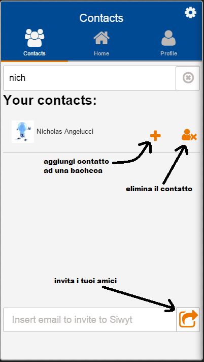

<div id="carousel">
        <div id="skip"><a class="pull-right">Skip<i class="fa fa-step-forward fa-3x"></i></a></div>
        <div id="carousel-left"><i class="fa fa-angle-left fa-5x"></i></div>
        <div id="carousel-right"><i class="fa fa-angle-right fa-5x"></i></div>
        <div id="screen_1" class="carousel-img">
            
        </div>
        <div id="screen_2" class="carousel-img next">
            
        </div>
        <div id="carousel-pagination">
            <span id="page_1" class="badge">1</span>
            <span id="page_2" class="badge">2</span>
            <!--<span class="badge page_3">3</span>
            <span class="badge page_4">4</span>
            <span class="badge page_5">5</span>
            <span class="badge page_6">6</span>
            <span class="badge page_7">7</span>-->
        </div>
</div>
